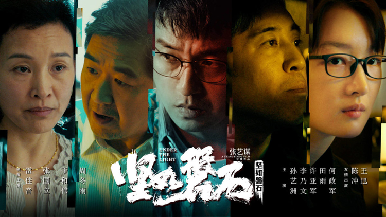

Returning recently with his best films in years, the wuxia epic Shadow and the generally unseen One Second, Zhang Yimou now has a new project in production. His crime drama Under the Light, the first trailer for which has now arrived (see below). Under the Light, which originally had the title of Rock Solid, finds the director in new territory of urban crime drama. Starring Lei Jiayin, Zhang Guoli, Yu Hewei and Zhou Dongyu. The first trailer doesn’t feature English subtitles, but it does show off the stylish-looking, neon-lit drama, which seems to involve multiple generations involved in some nefarious exchanges.
